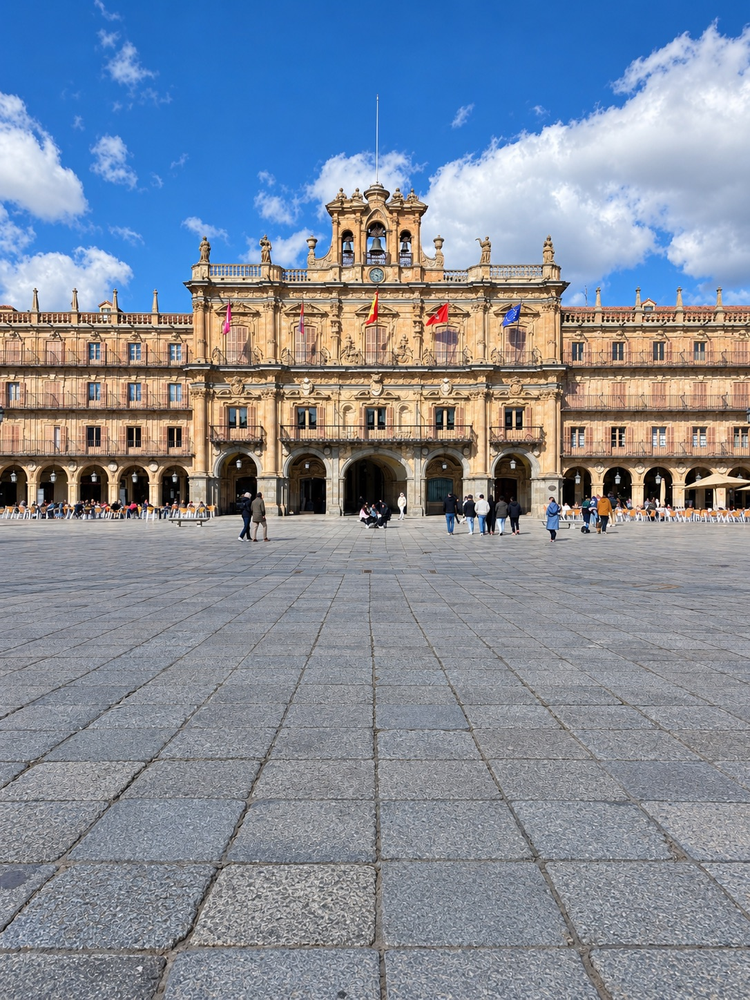
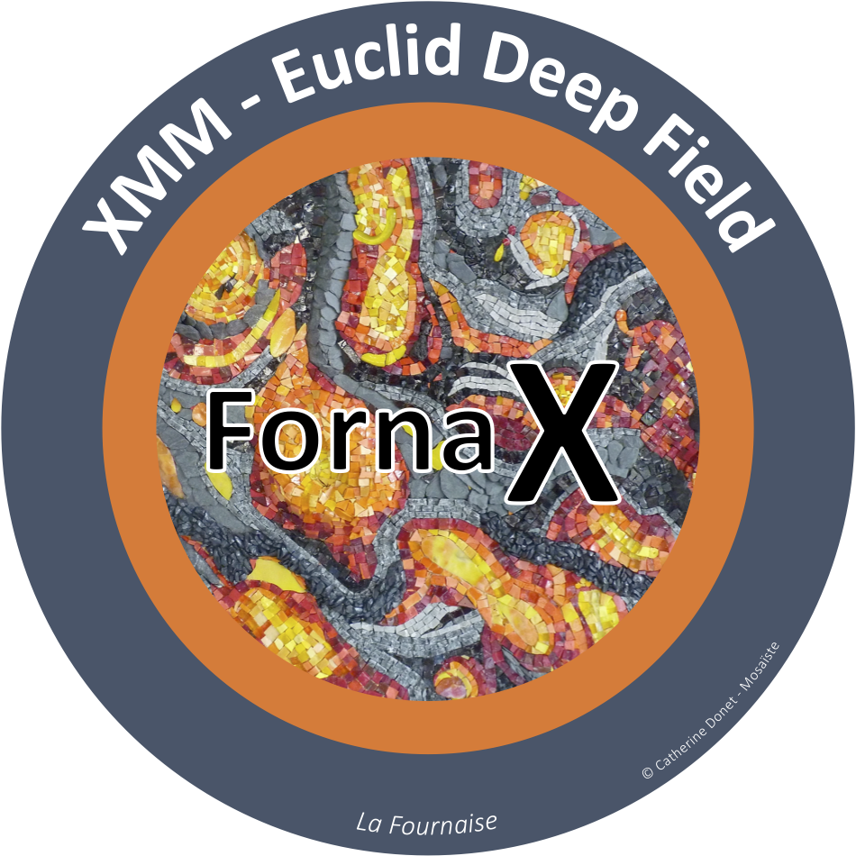
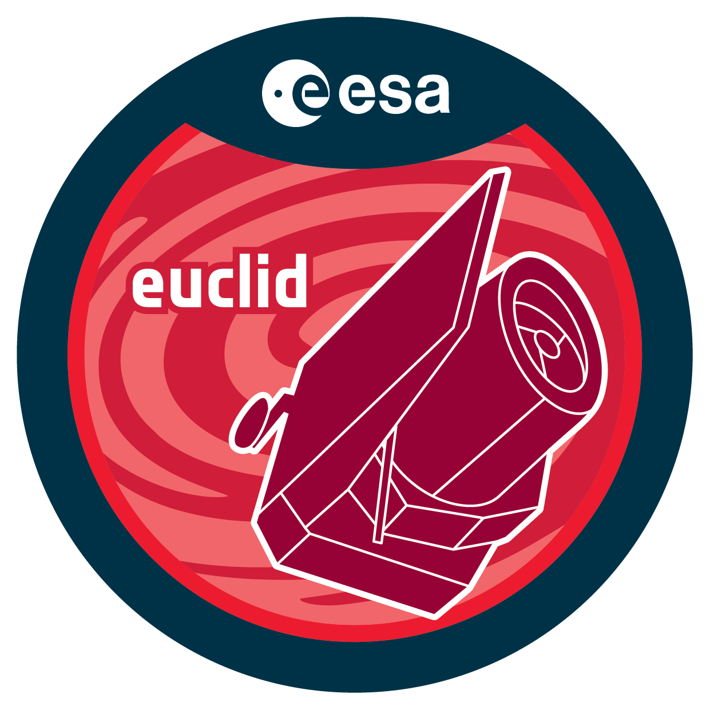
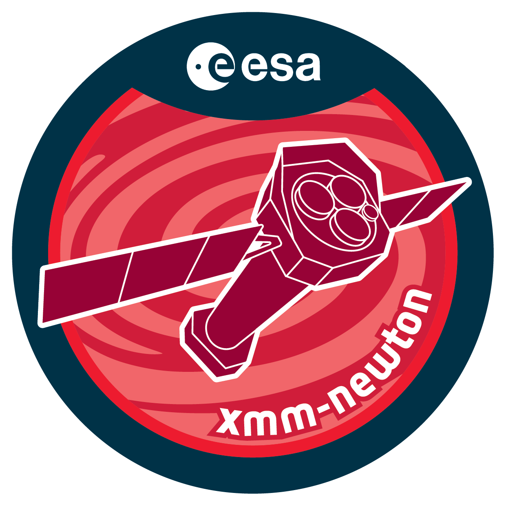

Collaboration meeting 2027
Salamanca · 5–9 April 2027
Open to any Euclid member who wants to contribute.



Information and registration
[MEETING PAGE URL]
Contact: ivan.munozrodriguez@cea.fr
marguerite.pierre@cea.fr